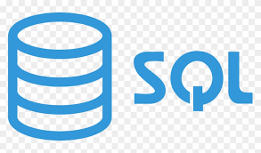
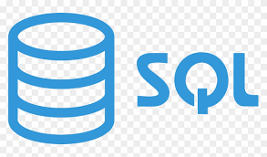
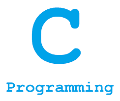
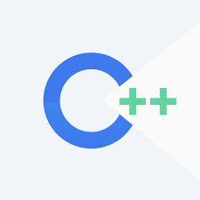
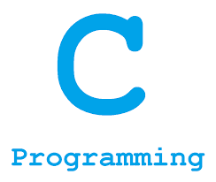
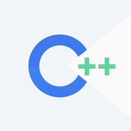

Hello! I am a computer science enthusiast who has pursued both my undergraduate and masters degree in the field. With three years of experience as a software engineer, I have had the opportunity to work in two start-ups based in India. I am particularly interested in the field of machine learning, and am constantly exploring the exciting world of AI and deep learning.
In addition to my interest in machine learning, I also enjoy working on front-end development. When I'm not coding or building models, I love to indulge in my hobbies of art and travelling. I find great inspiration in exploring new places and cultures, and love to capture my experiences through various forms of art. It's amazing how much the world has to offer, and I'm always eager to learn and grow through my travels.
Overall, I'm incredibly passionate about the field of computer science and excited to see where my journey takes me next!

 



 


